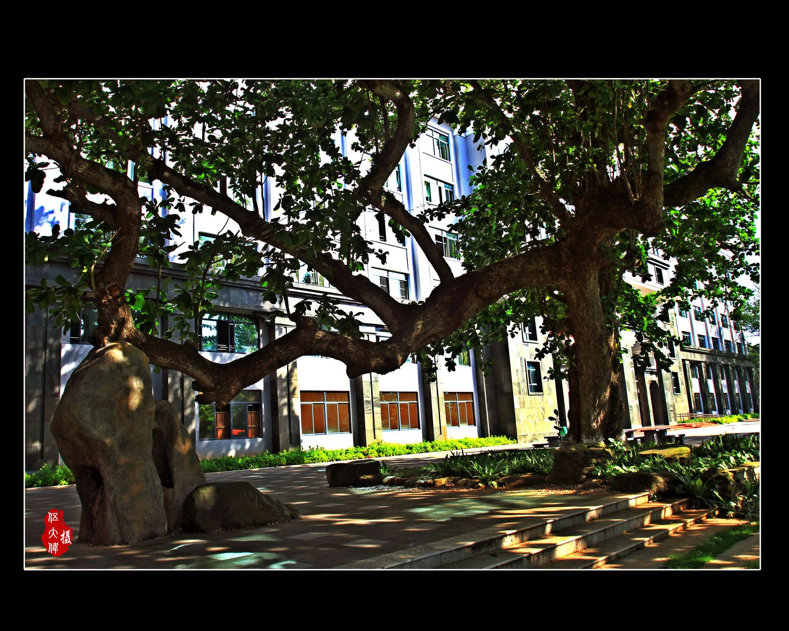

马白山
开国少将
06FROM HERE, ONWARD.
以下人物与身份简述沿用原仓库所收录的学校简介资料。我们不虚构他们的经历、引语或实际所在地。

FUCHENG CAMPUS / HAIKOU开国少将
为国争光的运动员
为国争光的运动员
诲人不倦的教育家
诲人不倦的教育家
引领时代风云的企业家
参与执导杭州亚运会闭幕式的艺术家
深海和极地关键技术与装备总体专家组成员，探索突破「卡脖子」技术
「超级钢」发明者
联合国教科文组织相关学会副理事长
资料来源：原仓库 data/alumni.json 所标注的海南中学官网《学校简介》。身份描述沿用原文摘录，不代表最新任职信息。
远方不是同一个方向。
出发的地方，可以相同。